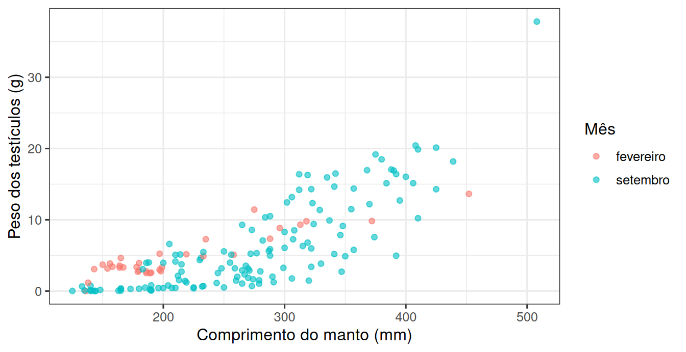
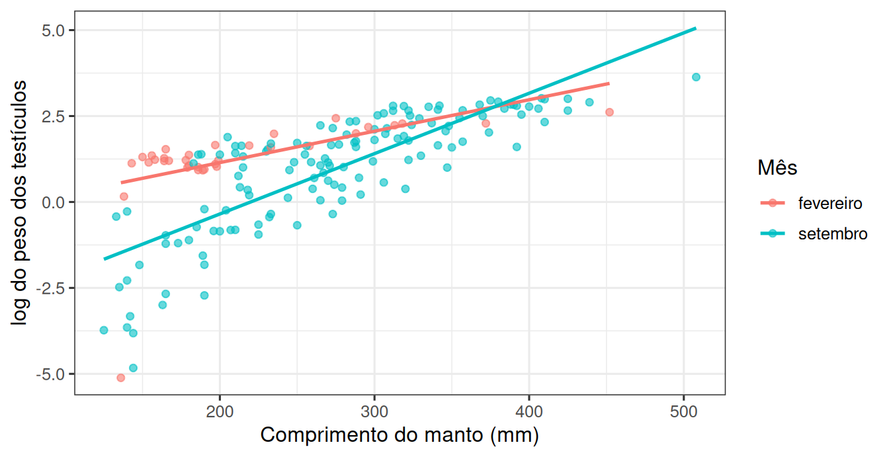
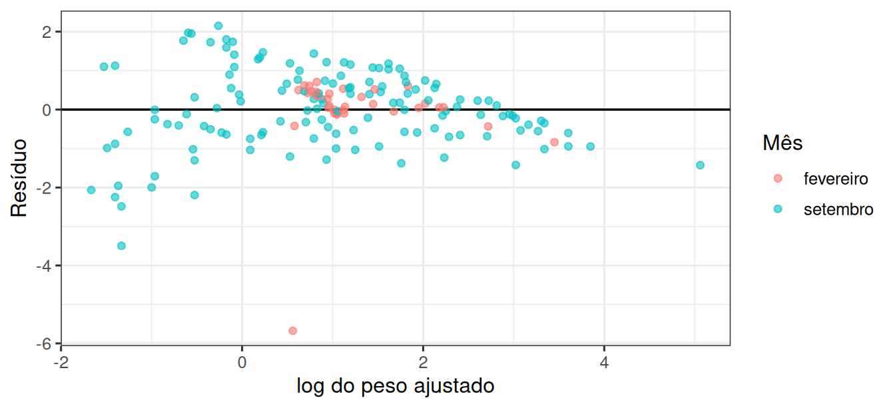
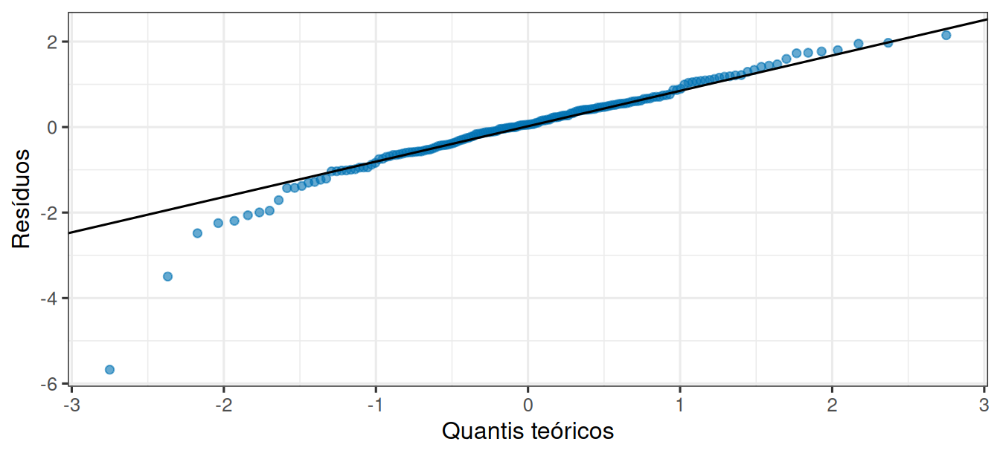

library(tidyverse)
theme_set(theme_bw(base_size = 12))Prática em R 09
Do delineamento à conclusão
1 Os machos de setembro estão mais maduros?
Uma série de coletas de lulas registrou, para cada indivíduo, o comprimento do manto e o peso dos testículos. A pergunta biológica é sobre maturação: em setembro, os machos têm testículos mais pesados do que em fevereiro?
Comparar as médias brutas seria fácil, e provavelmente errado. Peso de testículo cresce com o tamanho do animal, e se as lulas de setembro forem maiores, parte da diferença vem apenas do tamanho.
Esta é a última prática, e ela junta tudo: descrever, escolher o modelo, verificar, comparar modelos e interpretar com os limites do delineamento.
2 Vamos abrir os dados
url <- "https://raw.githubusercontent.com/FCopf/datasets/refs/heads/main/zuur-2009-data-sets/Squid.txt"
lulas <- read_tsv(url, show_col_types = FALSE)
glimpse(lulas)Rows: 768
Columns: 5
$ Specimen <dbl> 1017, 1034, 1070, 1070, 1019, 1002, 1001, 1013, 1002, 100…
$ YEAR <dbl> 1991, 1990, 1990, 1990, 1990, 1990, 1991, 1990, 1990, 199…
$ MONTH <dbl> 2, 9, 12, 11, 8, 10, 5, 7, 7, 7, 9, 6, 9, 9, 12, 9, 6, 7,…
$ DML <dbl> 136, 144, 108, 130, 121, 117, 133, 105, 109, 97, 144, 141…
$ Testisweight <dbl> 0.006, 0.008, 0.008, 0.011, 0.012, 0.012, 0.013, 0.015, 0…DML é o comprimento do manto em milímetros e Testisweight é o peso dos testículos em gramas.
Vamos comparar dois meses:
dois_meses <- lulas |>
filter(MONTH %in% c(2, 9)) |>
mutate(mes = factor(MONTH, labels = c("fevereiro", "setembro")))
dois_meses |> count(mes)# A tibble: 2 × 2
mes n
<fct> <int>
1 fevereiro 34
2 setembro 1343 A comparação bruta
dois_meses |>
group_by(mes) |>
summarise(
n = n(),
peso_medio = mean(Testisweight),
comprimento_medio = mean(DML)
)# A tibble: 2 × 4
mes n peso_medio comprimento_medio
<fct> <int> <dbl> <dbl>
1 fevereiro 34 4.81 212.
2 setembro 134 6.23 275.4 Como as duas variáveis se relacionam?
ggplot(dois_meses, aes(x = DML, y = Testisweight, colour = mes)) +
geom_point(alpha = 0.6, size = 1.6) +
labs(x = "Comprimento do manto (mm)", y = "Peso dos testículos (g)", colour = "Mês")
Passar a resposta para a escala logarítmica costuma resolver esse tipo de padrão:
dois_meses <- dois_meses |>
mutate(log_peso = log(Testisweight))ggplot(dois_meses, aes(x = DML, y = log_peso, colour = mes)) +
geom_point(alpha = 0.6, size = 1.6) +
geom_smooth(method = "lm", se = FALSE, linewidth = 0.9) +
labs(x = "Comprimento do manto (mm)", y = "log do peso dos testículos", colour = "Mês")
5 As faixas de comprimento se sobrepõem?
Uma verificação obrigatória antes de qualquer ajuste por covariável:
dois_meses |>
group_by(mes) |>
summarise(minimo = min(DML), maximo = max(DML))# A tibble: 2 × 3
mes minimo maximo
<fct> <dbl> <dbl>
1 fevereiro 136 452
2 setembro 125 508Os dois meses cobrem faixas amplas e sobrepostas. Isso permite comparar os meses em comprimentos efetivamente observados nos dois grupos, sem extrapolar.
6 Dois modelos, duas hipóteses sobre as retas
O modelo aditivo supõe retas paralelas: uma única inclinação para os dois meses e um deslocamento vertical entre eles.
aditivo <- lm(log_peso ~ DML + mes, data = dois_meses)
summary(aditivo)
Call:
lm(formula = log_peso ~ DML + mes, data = dois_meses)
Residuals:
Min 1Q Median 3Q Max
-5.1428 -0.5386 0.0978 0.7192 2.0499
Coefficients:
Estimate Std. Error t value Pr(>|t|)
(Intercept) -2.16939 0.28720 -7.554 2.75e-12 ***
DML 0.01615 0.00105 15.378 < 2e-16 ***
messetembro -1.30359 0.21336 -6.110 6.94e-09 ***
---
Signif. codes: 0 '***' 0.001 '**' 0.01 '*' 0.05 '.' 0.1 ' ' 1
Residual standard error: 1.057 on 165 degrees of freedom
Multiple R-squared: 0.5911, Adjusted R-squared: 0.5862
F-statistic: 119.3 on 2 and 165 DF, p-value: < 2.2e-16O modelo com interação permite que cada mês tenha a sua própria inclinação:
com_interacao <- lm(log_peso ~ DML * mes, data = dois_meses)
summary(com_interacao)
Call:
lm(formula = log_peso ~ DML * mes, data = dois_meses)
Residuals:
Min 1Q Median 3Q Max
-5.6762 -0.5379 0.0548 0.5787 2.1486
Coefficients:
Estimate Std. Error t value Pr(>|t|)
(Intercept) -0.683311 0.558857 -1.223 0.223200
DML 0.009144 0.002499 3.659 0.000341 ***
messetembro -3.178352 0.644579 -4.931 1.99e-06 ***
DML:messetembro 0.008419 0.002740 3.073 0.002482 **
---
Signif. codes: 0 '***' 0.001 '**' 0.01 '*' 0.05 '.' 0.1 ' ' 1
Residual standard error: 1.031 on 164 degrees of freedom
Multiple R-squared: 0.6134, Adjusted R-squared: 0.6063
F-statistic: 86.73 on 3 and 164 DF, p-value: < 2.2e-167 De qual dos dois precisamos?
Em vez de decidir no olho, compare os dois modelos diretamente:
anova(aditivo, com_interacao)Analysis of Variance Table
Model 1: log_peso ~ DML + mes
Model 2: log_peso ~ DML * mes
Res.Df RSS Df Sum of Sq F Pr(>F)
1 165 184.31
2 164 174.28 1 10.036 9.4437 0.002482 **
---
Signif. codes: 0 '***' 0.001 '**' 0.01 '*' 0.05 '.' 0.1 ' ' 18 O que muda na interpretação
A diferença entre os dois modelos não é técnica, é de conclusão.
No modelo aditivo, o coeficiente messetembro seria a resposta pronta: a diferença entre os meses, na escala logarítmica, válida em qualquer comprimento.
No modelo com interação, essa frase deixa de existir. A diferença entre os meses depende do comprimento, e precisa ser descrita em pontos concretos:
comprimentos <- c(150, 250, 350)
comparacao <- tibble(
DML = rep(comprimentos, each = 2),
mes = factor(rep(c("fevereiro", "setembro"), times = 3))
)
comparacao |>
mutate(log_peso_previsto = predict(com_interacao, newdata = comparacao)) |>
pivot_wider(names_from = mes, values_from = log_peso_previsto) |>
mutate(diferenca = setembro - fevereiro)# A tibble: 3 × 4
DML fevereiro setembro diferenca
<dbl> <dbl> <dbl> <dbl>
1 150 0.688 -1.23 -1.92
2 250 1.60 0.529 -1.07
3 350 2.52 2.29 -0.2329 Os resíduos sustentam o modelo?
diagnostico <- tibble(
ajustado = fitted(com_interacao),
residuo = residuals(com_interacao),
mes = dois_meses$mes
)
ggplot(diagnostico, aes(x = ajustado, y = residuo, colour = mes)) +
geom_hline(yintercept = 0, linewidth = 0.6) +
geom_point(alpha = 0.6, size = 1.6) +
labs(x = "log do peso ajustado", y = "Resíduo", colour = "Mês")
ggplot(diagnostico, aes(sample = residuo)) +
stat_qq(alpha = 0.6, colour = "#0072B2") +
stat_qq_line() +
labs(x = "Quantis teóricos", y = "Resíduos")
10 Até onde a conclusão pode ir
Esta é a parte mais importante da prática, e não tem código.
Ninguém sorteou quais lulas seriam coletadas em fevereiro e quais em setembro. O mês é uma condição observada, não um tratamento atribuído.
Isso significa que os dois grupos podem diferir em muitas coisas além do tamanho: temperatura da água, disponibilidade de alimento, estágio do ciclo reprodutivo, profundidade de captura, seleção do próprio método de pesca.
11 Entrega
12 Para saber mais
- Regressão linear múltipla (MEAD)